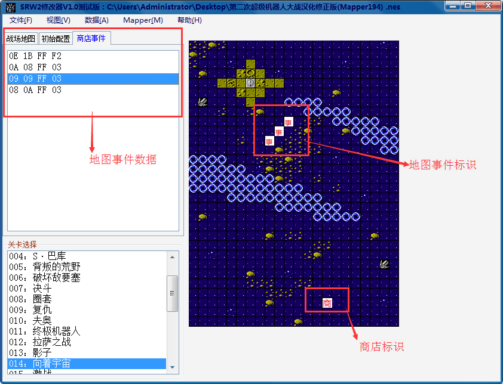
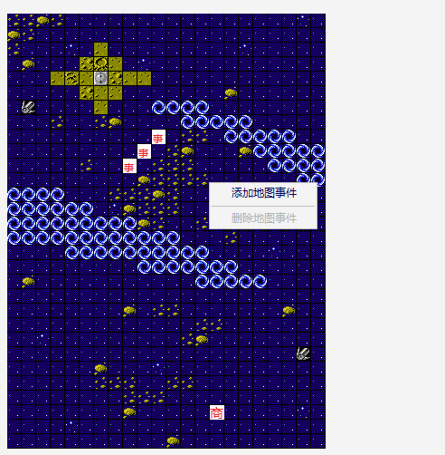
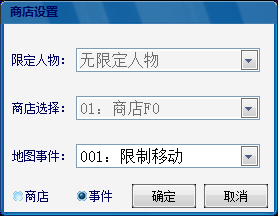

功能区域分布：
地图事件的定义和使用意义：地图事件是指敌我方单位移动至具有地图事件的坐标时发生的事件（仅对于我方单位有效）。地图事件的触发条件是到达指定坐标，执行结果是事件中的任意一条执行结果，其相当于一个封装好的事件，可被所有关卡重复调用，例如商店。地图事件是统一的格式，即坐标+人物限定+事件编号。

商店标识即为商店，事件标识即为一般事件，如移动不能、逃脱点等，修改者也可自行设置相应的事件。鼠标悬浮于原标识之上，即可进行编辑或者删除操作。鼠标悬浮于地图中的任一位置可添加地图事件，右键选择添加事件，弹出编辑框。左下角选择商店，即可设置商店，商店的可编辑项目为限定人物和商店类型。选择事件，即可设定移动限制、逃脱点或者由修改者自行设定的地图事件，选择确定即可完成地图事件的添加。
 